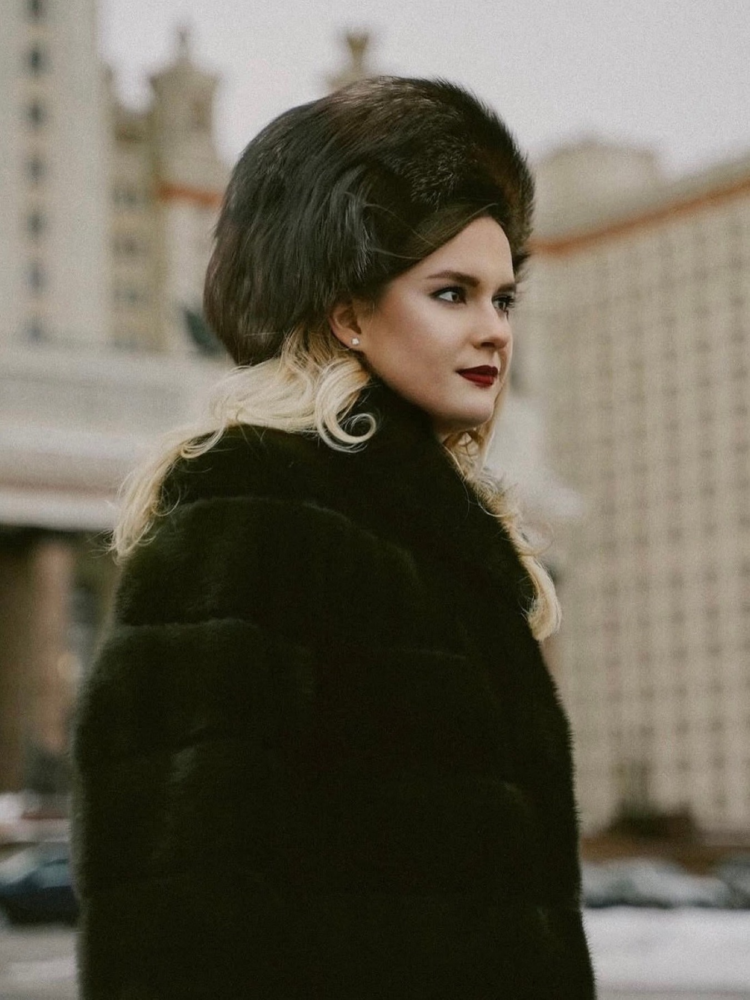

«Съёмка по записи» — пять вариантов
Во всех вариантах текст остаётся маленьким. Меняется только его связь со страницей: продолжает ли он галерею, стоит рядом с «ещё», становится меткой серии, завершает футер или лежит на последнем кадре.
Строка продолжает край последнего ряда, а счётчик кадров уравновешивает её справа. Это мой фаворит: заметна без отдельного «баннера».


Подходит для страниц, где ещё есть скрытые фотографии: запись не висит ниже сама по себе, а логично завершает ту же строку действий.
Запись встроена в служебную строку «Портреты · 30 кадров». Получается очень компактно и не выглядит кнопкой вообще, но остаётся читаемой.
После галереи нет промежуточного блока: запись становится первой строкой футера. Хорошо работает, если футер присутствует на всех разделах одинаково.
Строка находится непосредственно на фотографии и читается как подпись к развороту. Визуально сильнее остальных, но зависит от каждого конкретного последнего кадра.